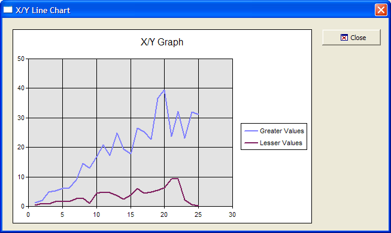

XY Graph
This example shows how to use the Microsoft Office Chart ActiveX Control.

Example
 Note : To run this
sample Xdialog script, you must have Microsoft Office
installed on your machine.
Note : To run this
sample Xdialog script, you must have Microsoft Office
installed on your machine.
|
dim vl as P dim shared Chart as P dim Graph as P dim Graph.object as P dim Graph.class as C vl = local_variables() 'Define the Microsoft Office Chart ActiveX Control Graph.class="owc.chart" dlg_title = "X/Y Line Chart" dlg_source = <<%dlg% {can_exit=close} {startup=init} {lf}; {region001} {stretch=height,width} {sp}{activex=100,25Graph}; {stretch=} {stickto=right,top} {endregion001} {region002} {sp}<%i=$a5_window_close;O={J=C} {I=1} Close; %18,1.5&Close!close>{sp}; {endregion002} %dlg% |
Add the event handlers for the buttons.
|
dlg_event = <<%code% if (a_dlg_button = "close") .or. (a_dlg_button = "") then ui_modeless_dlg_close(dlg_title) end if if (a_dlg_button = "init") then a_dlg_button = "" |
Build the chart on the init event. Series2 is an array of pointers. each element in the array contains information about a data series that is plotted on the graph.
|
dim Series2 as P dim Rows as N Rows = 25 dim XValueRows as N dim YValue1Rows as N dim YValue2Rows as N ' Add a chart to the graph object Chart = Graph.object.Charts.Add() Chart.HasTitle = .T. Chart.Title.Caption = "X/Y Graph" Chart.Type = 25 ' Scatter Line - See the Complete List of Supported Chart Types. Chart.HasLegend = .T. ' Create some random data for the graph for i = 1 to Rows XValuei = i ' Just a sequence 1..25 YValue1i = rand()* i + i ' A random number greater than i YValue2i = rand()* i / 2 ' A random number smaller than i next i ' Add the two series to the chart Series1 = Chart.SeriesCollection.Add() Series1.Caption = "Greater Values" |
SetData() is a method call of the chart object. The arguments passed in the first call to .SetData() are:
4, indicating that we are setting an X value (see Complete List of Supported Data Types )
-1, indicating that the data is being supplied directly, rather than from a data source
XValue, containing the name of the array that contains the actual values.
|
Series1.SetData(4, -1, XValue) ' X Values for Series 1 |
The arguments passed in the second call to .SetData() are:
3, indicating that we are setting an Y value (see Complete List of Supported Data Types )
-1, indicating that the data is being supplied directly, rather than from a data source
YValue, containing the name of the array that contains the actual values.
|
Series1.SetData(4, -1, XValue) ' X Values for Series 1 Series2 = Chart.SeriesCollection.Add() Series2.Caption = "Lesser Values" Series2.SetData(4, -1, XValue) ' X Values Series2.SetData(3, -1, YValue2) ' Y Values Graph.object.Refresh() end if %code% ui_modeless_dlg_box(dlg_title, dlg_source, dlg_event) |
Complete List of Supported Chart Types
|
'chChartTypeColumnClustered = 0, 'chChartTypeColumnStacked = 1, 'chChartTypeColumnStacked100 = 2, 'chChartTypeBarClustered = 3, 'chChartTypeBarStacked = 4, 'chChartTypeBarStacked100 = 5, 'chChartTypeLine = 6, 'chChartTypeLineStacked = 8, 'chChartTypeLineStacked100 = 10, 'chChartTypeLineMarkers = 7, 'chChartTypeLineStackedMarkers = 9, 'chChartTypeLineStacked100Markers = 11, 'chChartTypeSmoothLine = 12, 'chChartTypeSmoothLineStacked = 14, 'chChartTypeSmoothLineStacked100 = 16, 'chChartTypeSmoothLineMarkers = 13, 'chChartTypeSmoothLineStackedMarkers = 15, 'chChartTypeSmoothLineStacked100Markers = 17, 'chChartTypePie = 18, 'chChartTypePieExploded = 19, 'chChartTypePieStacked = 20, 'chChartTypeScatterMarkers = 21, 'chChartTypeScatterLine = 25, 'chChartTypeScatterLineMarkers = 24, 'chChartTypeScatterLineFilled = 26, 'chChartTypeScatterSmoothLine = 23, 'chChartTypeScatterSmoothLineMarkers = 22, 'chChartTypeBubble = 27, 'chChartTypeBubbleLine = 28, 'chChartTypeArea = 29, 'chChartTypeAreaStacked = 30, 'chChartTypeAreaStacked100 = 31, 'chChartTypeDoughnut = 32, 'chChartTypeDoughnutExploded = 33, 'chChartTypeRadarLine = 34, 'chChartTypeRadarLineMarkers = 35, 'chChartTypeRadarLineFilled = 36, 'chChartTypeRadarSmoothLine = 37, 'chChartTypeRadarSmoothLineMarkers = 38, 'chChartTypeStockHLC = 39, 'chChartTypeStockOHLC = 40, 'chChartTypePolarMarkers = 41, 'chChartTypePolarLine = 42, 'chChartTypePolarLineMarkers = 43, 'chChartTypePolarSmoothLine = 44, 'chChartTypePolarSmoothLineMarkers = 45 |
Complete List of Supported Data Types
|
SetData(type, datasourceindex, array) ' Values for type of data being set 'chDimSeriesNames = 0, 'chDimCategories = 1, 'chDimValues = 2, 'chDimYValues = 3, 'chDimXValues = 4, 'chDimOpenValues = 5, 'chDimCloseValues = 6, 'chDimHighValues = 7, 'chDimLowValues = 8, 'chDimBubbleValues = 9, 'chDimRValues = 10, 'chDimThetaValues = 11 |
Next
See Also